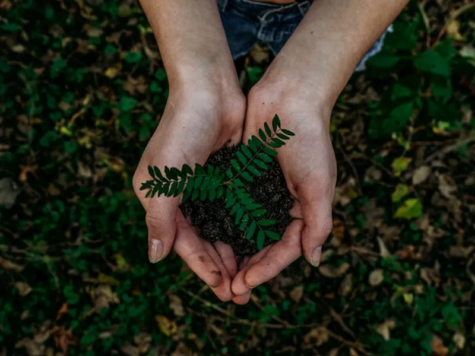
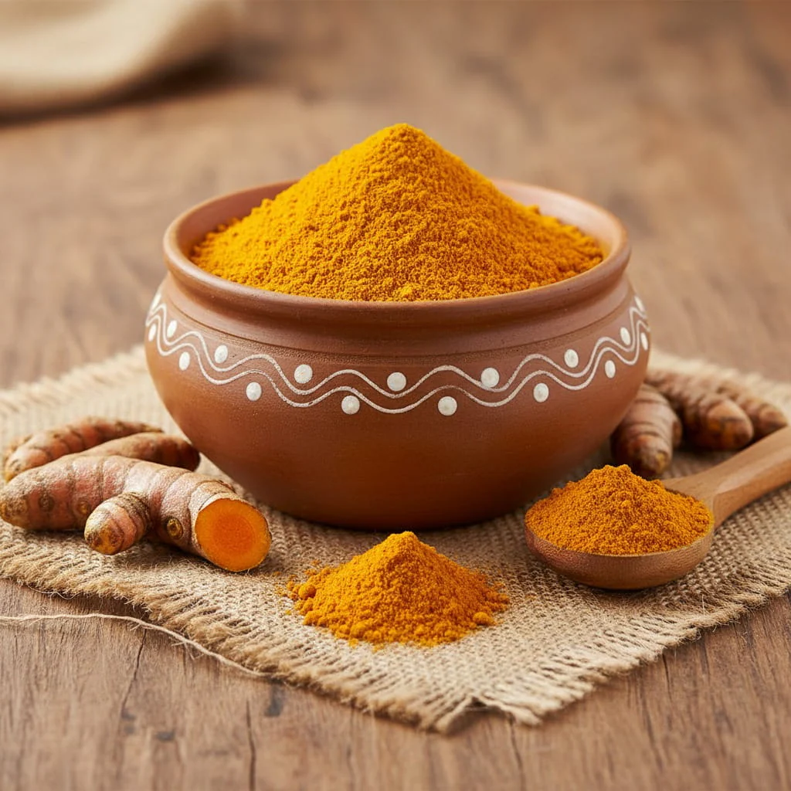
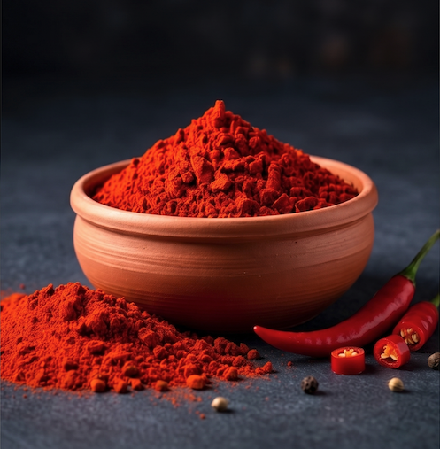
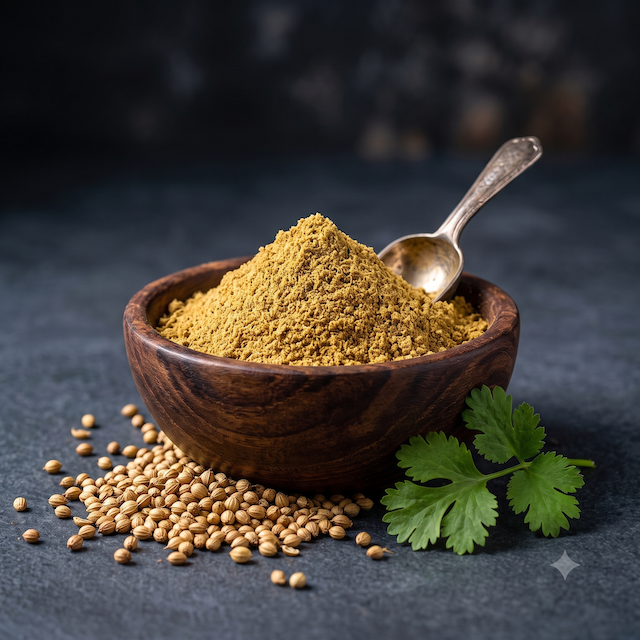
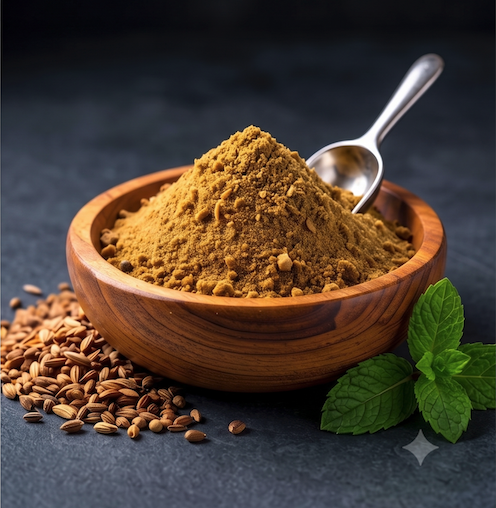
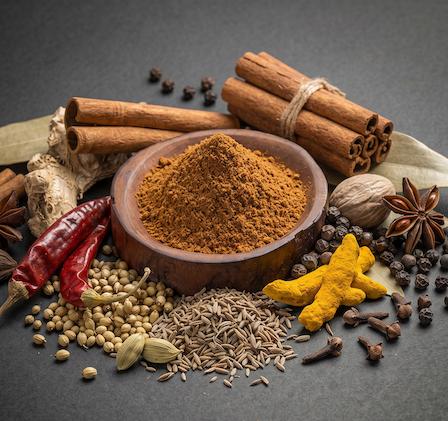
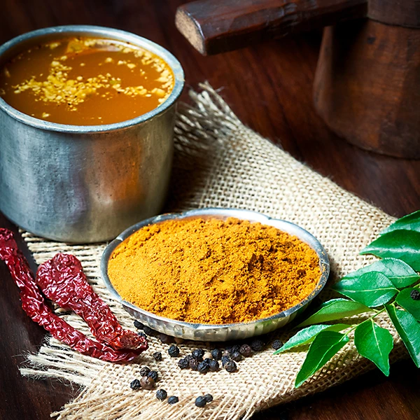
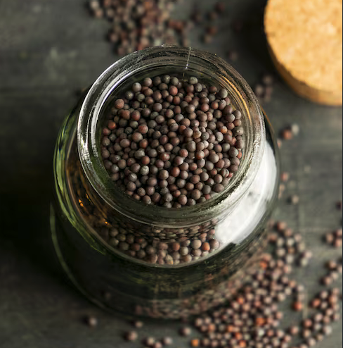
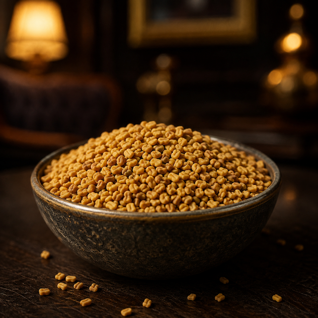

Natural Cultivation
We farm in harmony with natural ecosystems — working with the land rather than against it. Our cultivation practices respect the rhythms of nature, resulting in products with genuine character and integrity.
Naturally cultivated. Carefully sourced. Freshly packed.
We believe in farming that works with nature — bringing you premium agricultural products rooted in responsible cultivation and transparent sourcing from South India's finest farms.
At Elora Spices, naturally inspired farming isn't a marketing claim — it's the foundation of every decision we make. From soil preparation to final packing, we honour the natural world that makes premium agriculture possible.

We farm in harmony with natural ecosystems — working with the land rather than against it. Our cultivation practices respect the rhythms of nature, resulting in products with genuine character and integrity.
Healthy soil produces healthy crops. We support agricultural practices that nurture soil biodiversity, maintain natural fertility, and build long-term resilience — ensuring every harvest is as good as the last.
Behind every product is a farming family. We build long-term, meaningful relationships with our growers — ensuring fair value, knowledge exchange, and a shared commitment to naturally inspired farming.
Every step of our journey is intentional. Transparent. Rooted in respect for the land and the people who work it.
Seeds selected for their natural character, grown in soil nurtured through responsible agricultural practices.
Hand-picked at peak ripeness by experienced farmers who know exactly when each crop is ready.
Every batch is carefully sorted and inspected — only products meeting our quality standards move forward.
Packed at source to lock in aroma, freshness and natural character — minimal processing, maximum integrity.
From our farms to your home — carefully dispatched to ensure you receive every product at its finest.
Elora Spices was born from a shared conviction — that the gap between farm and home should be shorter, more transparent, and more meaningful.
With a deep personal interest in agriculture and natural products, Jeevan drives the brand vision, business development and customer transparency at Elora Spices. His conviction that consumers deserve to know exactly where their food comes from is the founding principle of the brand.
An anaesthesia doctor by profession, Balaji brings a healthcare perspective to food quality and responsible production. His belief in the deep connection between soil health, farming practices and human wellbeing shapes every quality decision at Elora Spices.
"We don't just want to sell agricultural products. We want to be part of a movement that brings farming closer to nature."
— Jeevan & Balaji, Co-Founders, Elora Spices
To be India's most trusted farm-to-home brand — where every product carries the integrity of the soil and the care of the farmer. We envision a world where the distance between farm and table is short, transparent and deeply meaningful. A world where naturally inspired farming is the standard, not the exception.
To connect conscious consumers with naturally cultivated agricultural products sourced directly from Indian farms — ensuring quality, transparency and fair value for the farmers who make it all possible. Every product we offer is a bridge between the land and your home.
Respecting natural ecosystems in every farming decision.
Building meaningful, long-term relationships with our growers.
Freshness, natural aroma and authentic character in every product.
Careful packaging that preserves quality from farm to home.
Transparent, honest relationships with every customer.
Every product in our range is sourced from trusted farms and packed with care — delivering freshness, quality and natural character you can taste.

Golden. Pure. Heritage.
Sourced from the finest naturally cultivated turmeric farms in Tamil Nadu and Kerala. High curcumin content, vibrant colour, and the honest, earthy aroma that only responsibly grown turmeric delivers.
Origin: Tamil Nadu & Kerala
Fiery. Vibrant. Honest.
Sun-dried and stone-ground from naturally cultivated Indian chillies. Rich, honest heat with the deep red colour that comes from careful, responsible farming — no artificial additives, just real spice.
Origin: Andhra Pradesh
Citrusy. Warm. Versatile.
Ground from whole coriander seeds grown through responsible farming practices. A gentle, citrusy spice that forms the base of South Indian cooking — freshly packed to preserve its delicate aroma.
Origin: South India
Earthy. Smoky. Deep.
Roasted and ground from naturally cultivated cumin. Its deep, smoky warmth anchors dals, curries and spice blends — a foundational flavour in every Indian kitchen.
Origin: Rajasthan
Complex. Warm. Signature.
A carefully balanced blend of naturally cultivated whole spices — roasted and ground in small batches. Every pinch carries warmth, depth and the unmistakable character of South Indian spice craft.
Origin: Blended, South India
Tangy. Peppery. Soulful.
The soul of South Indian comfort food. Naturally cultivated spices ground to produce a tangy, peppery blend — perfect for the warm, restorative rasam that every home deserves.
Origin: Tamil Nadu
Sharp. Essential. Foundational.
Small but mighty — naturally cultivated black mustard seeds that crackle and pop to release a sharp, nutty flavour. The first ingredient in every South Indian tempering.
Origin: South India
Bitter. Warm. Medicinal.
Naturally cultivated fenugreek with a distinctive, slightly bitter warmth. Used in pickles, curries and traditional remedies — a spice with deep roots in Indian culinary and wellness heritage.
Origin: South IndiaEvery product grown through responsible, naturally inspired farming practices.
Every batch inspected, sorted and packed fresh at source — no middlemen, no compromise.
Know exactly where your food comes from — we believe in honest, open sourcing.
Fair value, long-term relationships and shared commitment to naturally inspired farming.
At Elora Spices, quality isn't a department — it's a culture. From the soil our farmers nurture to the packaging that reaches your kitchen, every step reflects our promise: naturally cultivated, honestly delivered, and always fresh.
Whether you're a customer, a farmer or a business — we'd love to hear from you. Every conversation begins a relationship.
For wholesale, retail partnerships, farming collaborations or media enquiries, please select "Business Collaboration" in the form and provide details of your interest.